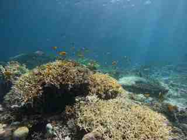
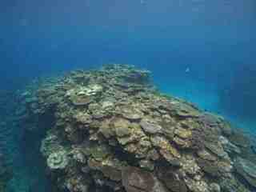

01Reef
Reef
ecologyサンゴ礁
生態学
Benthic habitats, reef-fish communities and ecological variation across spatial scales.底生生物、生息場、魚類群集の空間変動と生態学的関係を調べます。

Integrating sound to understand ecosystem dynamics.音情報を取り入れ、生態系の動態を理解する。
My research examines how coral reef ecosystems change across space and time, combining ecological field surveys, reef-fish observations and passive acoustic monitoring.生態学的な野外調査、魚類目視調査、受動的音響観測を組み合わせ、サンゴ礁生態系が空間・時間の中でどのように変化するかを研究しています。
Okinawa and the Ryukyu Archipelago provide a natural laboratory for studying habitat variation, bleaching, thermal stress, disturbance and recovery.沖縄・琉球列島を主なフィールドとして、生息場の違い、白化、熱ストレス、攪乱と回復に伴う生態系動態を追跡しています。

Benthic habitats, reef-fish communities and ecological variation across spatial scales.底生生物、生息場、魚類群集の空間変動と生態学的関係を調べます。
Passive acoustic monitoring of reef soundscapes, fish sounds and snapping shrimp activity.サウンドスケープ、魚類音、テッポウエビの活動を受動的音響観測で捉えます。

Coral bleaching, thermal stress and ecological trajectories through disturbance and recovery.サンゴ白化と熱ストレス、攪乱後の死亡・回復過程を追跡します。
Japanese Coral Reef Society · Most Outstanding Presentation Award日本サンゴ礁学会 · 最優秀発表賞
Society for Bioacoustics · Most Outstanding Presentation Award日本バイオロギング研究会／生物音響関連学会 · 発表賞
“Coral reefs are not silent. Sound provides another window into ecological change.”「サンゴ礁は静かではない。音は、生態系の変化を捉えるもう一つの窓になる。」